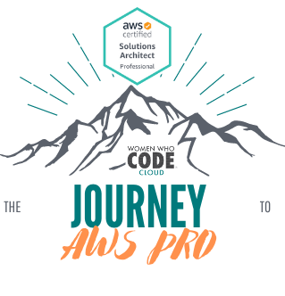

layout: true class: typo, typo-selection --- background-image: url(images/intro_get_started.png) background-repeat: repeat; class: center, middle ??? get started make sure everyone got to where they needed to be --- class: center, middle <img src="images/slides/phase1/thank_you.gif" alt="thank you!"/> ??? - flexibility - staying enagged --- class: center, middle  ??? - Welcome back all here for the group! Introduce myself and the group ! - no fuss no frills , good ol group learning --- class: center, middle ### Accountability. Support. Resources. Collaboration. Real World Experiences. ??? - **call out ❗️ we are NOT going to teach you the material...** --- class: left, middle # Agenda WWCode Exam Material Quiz Review White Paper Reading Questions/Collab Time ??? switch the format just a bit so we have time --- class: center, middle <img src="images/slides/wwcode_mission.png" alt="WWCode Mission"/> --- class: center, middle <img src="images/slides/wwcode_vision.png" alt="WWCode Vision"/> --- class: center, middle <img src="images/slides/wwcode_code.png" alt="WWCode Code of Conduct"/> --- class: center, middle # [Upcoming Events](https://www.womenwhocode.com/cloud/events) --- class: center # Phase 1 Schedule #### ✅ 8/29: Group Intro + Resource Review #### ✅ 9/12: Udemy Video Reivew 1-8 #### ✅ 9/26: Udemy Video Review 9-17 #### <small>❌ 10/10: Udemy Video Review 18-24</small> #### ✅ 10/24: Udemy Video Review 18-24 + Paper Review #### 10/31 11/14 : Hands on lab and exam practice #### 11/28 Celebrate! Phase 1 Complete --- class: center, middle ## Stay in the know! Join our Slack group! `#aws-studygroup`.<br> Email me! cloud@womenwhocode.com.<br> Follow Allong on Github! `briaugenreich/aws-certification-resources` --- class: center, middle # Are we on track for our exam goals? ??? - Before we jump in... lets hold each other accountbale - 2 week hiatus ...pushing to november 15 -- <img src="images/slides/phase1/group_goals.png" alt="Group Goals"/> --- class: center, middle ## Material Review <small>part 3 of 3 </small> --- class: center, middle <img src="images/slides/phase1/finish-line.jpg" alt="Group Goals"/> ??? - finish line is in sight --- class: center, middle # [Chapter 18 Quiz](https://www.udemy.com/course/aws-certified-solutions-architect-associate-saa-c02/learn/quiz/4586008#content) --- class: center, middle # Chapter 18 Questions? --- class: center, middle # [Chapter 19 Quiz](https://www.udemy.com/course/aws-certified-solutions-architect-associate-saa-c02/learn/quiz/4805215#content) --- class: center, middle # Chapter 19 Questions? --- class: center, middle # [Chapter 20 Quiz](https://www.udemy.com/course/aws-certified-solutions-architect-associate-saa-c02/learn/quiz/4595550#content) --- class: center, middle # Chapter 20 Questions? --- class: center, middle # [Chapter 21 Quiz](https://www.udemy.com/course/aws-certified-solutions-architect-associate-saa-c02/learn/quiz/4586012#content) --- class: center, middle # Chapter 21 Questions? --- class: center, middle # [Chapter 22 Quiz](https://www.udemy.com/course/aws-certified-solutions-architect-associate-saa-c02/learn/quiz/4595630#content) --- class: center, middle # Chapter 22 Questions? --- class: center, middle # [Chapter 23 Quiz](https://www.udemy.com/course/aws-certified-solutions-architect-associate-saa-c02/learn/quiz/4805241#content) --- class: center, middle # Chapter 23 Questions? --- class: center, middle # [Chapter 24 Quiz](https://www.udemy.com/course/aws-certified-solutions-architect-associate-saa-c02/learn/quiz/4595164#overview) --- class: center, middle # Chapter 24 Questions? --- class: center, middle <img src="images/slides/phase1/celebrate.gif" alt=""/> --- class: center, middle # White Paper & FAQ Review ??? - take about 20-30 mins to review and start reading if you already havent - super recommended by AWS --- ## Reading Resources <br><br> .orange.bold[*][AWS FAQs](https://aws.amazon.com/faqs/) <xtra-small> ( FAQ Topics: Amazon EC2 || Amazon S3 || Amazon VPC || Amazon Route 53 || Amazon RDS || Amazon SQS) </xtra-small> .orange.bold[*][AWS A Well Architected Framework](https://aws.amazon.com/architecture/well-architected/?wa-lens-whitepapers.sort-by=item.additionalFields.sortDate&wa-lens-whitepapers.sort-order=desc) [AWS White Paper Guides](https://aws.amazon.com/whitepapers/) .footnote[.orange.bold[*]<small> Indicates resources Bri will be using. </small>] --- background-image: url(images/slides/phase1/brb.png) background-repeat: repeat; class: center, middle --- class: center, middle ## .wwcodebold[Questions] & .wwcodebold[Collab Time] ??? - exam guide -> https://d1.awsstatic.com/training-and-certification/docs-sa-assoc/AWS-Certified-Solutions-Architect-Associate_Exam-Guide.pdf - Sample Questions -> https://d1.awsstatic.com/training-and-certification/docs-sa-assoc/AWS-Certified-Solutions-Architect-Associate_Sample-Questions.pdf